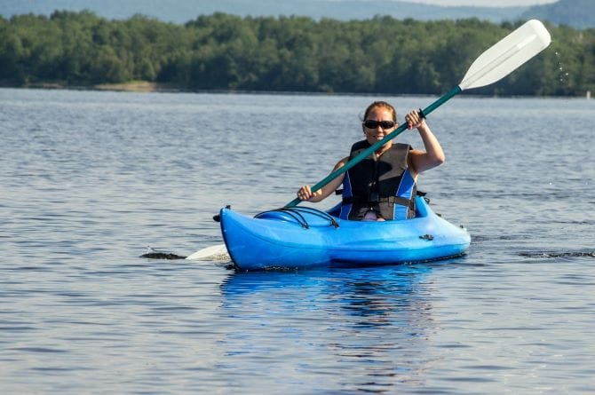
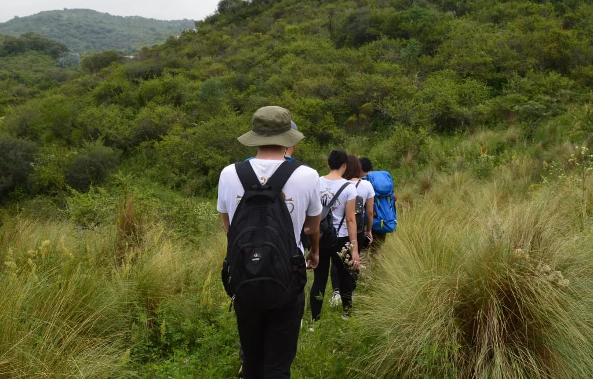
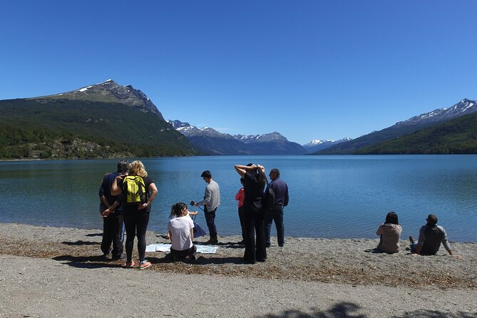
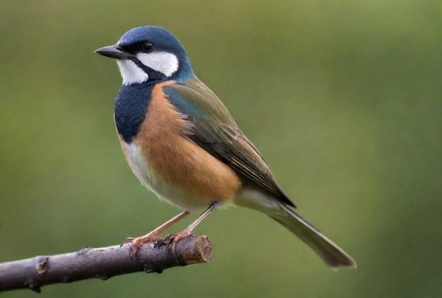

Actividades Eco-turísticas
Proponemos que se creen actividades eco-turísticas para que las personas concienticen sobre la gravedad de la situación del lago, y ádemas divertirse sin dañar el ecosistema, así que proponemos actividades como senderismo, paseos en kayak y recorridos guiados para concientizar sobre la importancia de preservar el lago y sus alrededores.

Paseos en Kayak

Senderismo

Recorridos Guiados

Ciclismo
